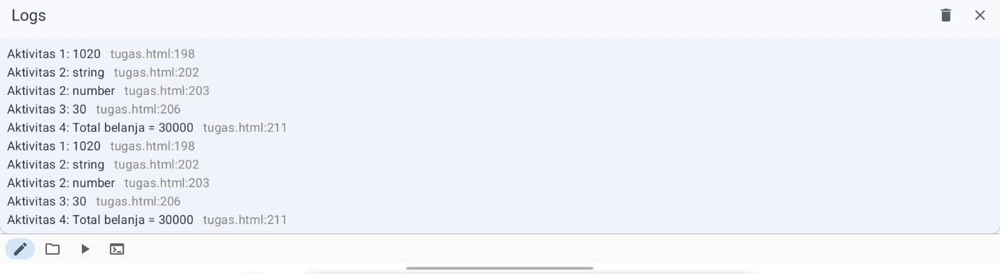

Materi: JavaScript — String, Number, dan Konversi Data
Kelas/Fase: X / Fase E
Alokasi waktu: 2 × 45 menit
Nama: Nabilla Permata Ababil
Kelas: X PPLG 1
No. Absen: 20
let a = "10"; let b = "20"; console.log(a + b);
1. Apa hasil output program tersebut?
Jawaban: 1020
2. Mengapa hasilnya seperti itu?
Jawaban: Karena a dan b bertipe String, operator + menggabungkan teks.
3. Apakah a dan b bertipe Number?
Jawaban: Tidak, keduanya bertipe String.
4. Apakah prediksi sesuai dengan hasil program?
Jawaban: Ya, hasilnya sesuai dengan prediksi.
let nama = "Asep"; let umur = 16; console.log(typeof nama); console.log(typeof umur);
| Variabel | Prediksi | Hasil typeof | Kesimpulan |
|---|---|---|---|
| nama | String | string | Teks |
| umur | Number | number | Angka |
Apa perbedaan String dan Number?
Jawaban: String digunakan untuk teks, sedangkan Number digunakan untuk nilai angka yang dapat dihitung.
let a = "10"; let b = "20"; let hasil = Number(a) + Number(b); console.log(hasil);
Lengkapi bagian yang kosong.
Jawaban: Number(a) + Number(b)
Hasil output: 30
let harga = Number(prompt("Masukkan harga: "));
let jumlah = Number(prompt("Masukkan jumlah: "));
let total = harga * jumlah;
console.log("Total belanja = " + total);
1. Mengapa menggunakan Number()?
Jawaban: Agar input dari prompt() diubah menjadi angka sehingga dapat dihitung.
2. Jika harga 10000 dan jumlah 3, berapa totalnya?
Jawaban: 30000
let tugas = Number(prompt("Masukkan nilai tugas: "));
let UTS = Number(prompt("Masukkan nilai UTS: "));
let UAS = Number(prompt("Masukkan nilai UAS: "));
let rataRata = (tugas + UTS + UAS) / 3;
console.log("Nilai rata-rata = " + rataRata);
Langkah algoritma:
1. Mengapa prompt() perlu dikonversi untuk perhitungan?
Jawaban: Karena prompt() menghasilkan String.
2. Apa perbedaan "10" dan 10?
Jawaban: "10" adalah String, sedangkan 10 adalah Number.
3. Apa yang terjadi jika lupa menggunakan Number()?
Jawaban: Perhitungan dapat menghasilkan penggabungan teks, bukan penjumlahan angka.
4. Hasil diskusi dengan teman:
Jawaban: Number() mengubah input teks menjadi angka agar dapat digunakan dalam perhitungan.
3 hal yang dipelajari:
2 hal yang masih membingungkan:
1 hal yang ingin dicoba:
Membuat program kasir sederhana menggunakan JavaScript.
| Pernyataan | Jawaban |
|---|---|
| Dapat membedakan String dan Number | Ya |
| Memahami prompt() menghasilkan String | Ya |
| Dapat menggunakan Number() | Ya |
| Dapat menggunakan String() | Ya |
| Dapat menemukan kesalahan tipe data | Ya |
| Dapat membuat program perhitungan sederhana | Ya |
Jalankan program berikut untuk melihat hasil di area output dan Console.
Hasil program akan muncul di sini.
